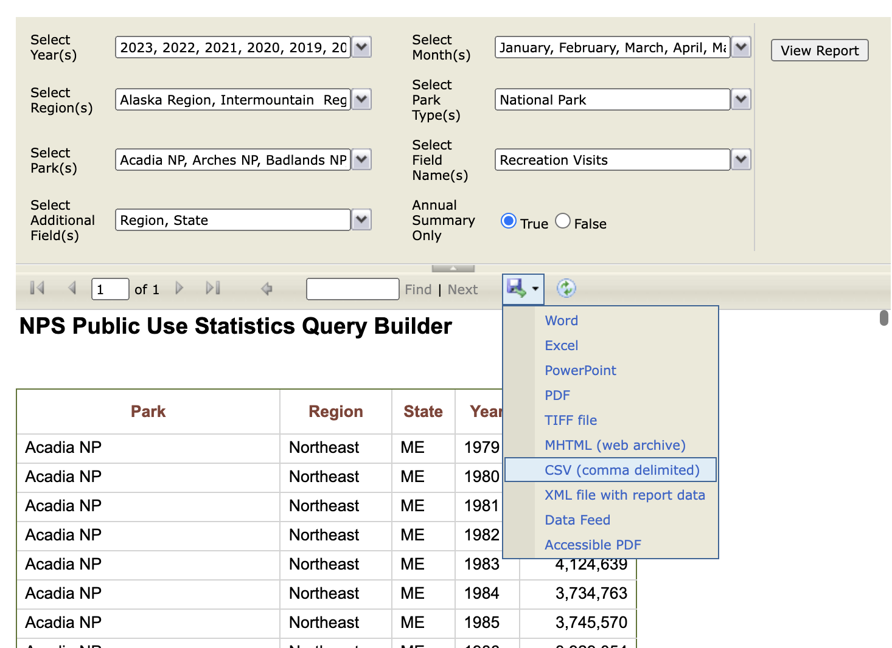

Introduction
This dataset contains the number of visits, per year, to each of the current 63 National Parks administered by the United States National Park Service (NPS), from 1979 to the present. The NPS also collects visitation and use data about other park units, such as national battlfieds, national rivers, and national monuments. However, information about other park units is not included in this particular dataset.
The National Park datasets included on this website are drawn from data published by the NPS. Most (but not all) of the contextual information included here draws from material published by the NPS, as well. However, the original data is made available in an NPS data portal that is relatively hard to find, and the documentation is distributed across many different web pages, PDFs, and other documents, so we believe it is valuable to curate and publish in a single place here.
The datasets were curated and published by Melanie Walsh, and the data essay was written by Os Keyes and Melanie Walsh.
History
The very first National Park — Yellowstone National Park, in Wyoming — was signed into law by President Ulysses S. Grant in 1872. A handful of other parks — Sequoia, Yosemite, Mt. Rainier, Crater Lake — joined the system in the next several decades. While the National Parks were originally created to protect precious, beautiful lands and to make them accessible to the public — a noble goal — it’s important to remember that these lands were taken, often forcibly, from Native American people who already owned, lived, and worked on them (Beauchamp 2020). Today, there are still calls for the NPS to return the lands of the National Parks to Indigenous people.
Scholars have similarly shown that early conservation movements, which spurred the development of the National Parks, were troublingly intertwined with racism and eugenics movements (Beauchamp 2020). These prejudiced origins, combined with continuing forms of environmental racism, have contributed to the marginalization of people of color and other minorities in the parks — in other words, research has shown that white people visit the parks much more than other demographic groups(Weber and Sultana 2013; Alba et al. 2022; Floyd and Johnson 2002). The National Parks are not equally accessible to everyone in the same way, and these exclusions shape the park visitation data even before it’s counted.
Visit counting, according to the NPS, started a long time ago — as early as 1904 (more than 10 years before the National Park Service itself was officially created). However, at this time, their data collection methods were mostly “informal,” inconsistent, and low-tech. But over the next century, the NPS worked hard to make their methods more reliable, consistent, and (in some but not all cases) technologically advanced.
A big catalyst for the NPS getting serious about data collection was a new law. In 1965, the U.S. Congress passed The Land and Water Conservation Fund Act of 1965. This act created a new source of government money specifically dedicated to protecting natural resources (i.e. to buying up more land and water so that condo developers couldn’t do it first) and to expanding outdoor recreation infrastructure in the U.S.
Because this act stipulated that the amount of money allocated to each area should be “proportional to visitor use,” the NPS buckled down on counting visitor use. Over the next twenty years, they accordingly “developed and institutionalized a formal system for collecting, compiling and reporting visitor use data.”
While today’s National Park data collection system is more formal and sophisticated than the one that the NPS used in 1904, there are still many inconsistencies, flaws, and limitations in this system. And these shortcomings are largely unavoidable. Trying to record every single visit to a National Park — across dozens of different parks and geographic regions; many decades of time; countless changing weather conditions; a great deal of economic and financial fluctuation; and hundreds of millions of people — is pretty much impossible. We believe this data is useful to study, in fact, because it helps demonstrate that data never reflects reality precisely.
However, the National Park visit data also demonstrates why collecting and analyzing data, even if it is flawed and approximate, is sometimes worthwhile — if you fully understand the data’s flaws, limitations, and history, and if you incorporate these considerations into all subsequent analyses, interpretations, and takeaways.
Where did the data come from? Who collected it?
The National Park data on this website was originally organized and published by the NPS Social Science Program, a specific program tasked with coordinating visitor statistics across the parks. Thousands of staff members across all 63 parks were also involved in the data collection process.
The original data was made available through the NPS’s Visitor Use Statistics data portal. Through this portal, you can generate reports and download data for many different park visitation categories and time periods — at both national and individual park levels. To download the data included here, we first selected “National Reports” in the data portal, and we then selected the “Query Builder for Public Use Statistics (1979 - Last Calendar Year)” report type.

For “Park Types,” we selected only “National Parks”; for “Years,” we selected all possible years (1979-2023); for “Regions,” we selected all possible regions; for “Field Type,” we selected only “Recreation Visits” (excluding “NonRecreation Visits,”” “Recreation Hours,” “NonRecreation Hours,” “Concessioner Lodging,” “Concessioner Camping,” “Tent Campers,” “RV Campers,” “Backcountry Campers,” “NonRecreation Overnight Stays,” and “Miscellaneous Overnight Stays”); for “Additional Fields,” we selected “State” and “Region”. We also selected the option of viewing the report as an annual summary of visit counts (as opposed to monthly visit counts).
If you choose to download this report as a CSV file, it will unfortunately not look exactly like the report pictured in Figure 1; instead, the CSV will include all visit and use types, and it will include visit/use information by month rather than aggregated by year. When I have compiled this data to share with my students in the past, I have sometimes downloaded the CSV file and then removed the columns that I’m not interested in and aggregated the data by year programatically. In other cases, I have simply copied and pasted the annual summary report into a CSV file.
In either case, it is usually necessary to explicitly transform the format of the “RecreationVisits” column into a number and to remove the commas that separate the numbers by thousands (a transformation that you can do with spreadsheet applications like Excel or Google Sheets or with a programming language) Finally, we published the data to this project’s GitHub repository for easier storage and access.
Why was the data collected? How is the data used?
The NPS collects visit data partly because the government requires it, as we’ve already discussed. But the NPS also uses the visit data for other internal purposes — to determine which parks need more staff members and programming, which hiking trails need more maintenance, or which visitor centers need more bathrooms.
The visit data also helps the communities and businesses surrounding the parks understand how they can best provide and share resources, like emergency vehicles, sanitation, and water. If millions more hikers started to come to Mt. Rainier, for example, that would be a very important thing for the surrounding community to know. To consider just one consequence of this increase, those hikers would likely need more ambulance trips and rescue helicopters, and you wouldn’t want visitors to the local National Park booking up all the emergency vehicles in town.
](https://www.nps.gov/orgs/1207/images/ECONOMIC-2020.jpg)
The visitation data also helps the NPS estimate the beneficial impact—economic and otherwise—that the parks have on nearby communities and the nation at large (Figure 2). These estimations are important because they help the parks advocate for more funding, support, and attention.
The data is also frequently reported on by journalists, who use it to highlight the most popular parks and noteworthy visitation records, as well as to point their readers to parks where they might be able to find some peace and quiet (see articles in Thrillist, Smithsonian, and CNN).
What’s in the data? What “counts” as a visit?
Now that we know how the data is used, let’s dive into the data itself. What’s actually in this dataset, and what “counts” as a visit?
To get started, let’s load the dataset and examine a random sample of rows.
Code
# https://statsandr.com/blog/an-efficient-way-to-install-and-load-r-packages/
# Load the dplyr package
library(dplyr, warn = FALSE)
# Load National Park Visitation data
np_data <- read.csv("https://raw.githubusercontent.com/melaniewalsh/responsible-datasets-in-context/main/datasets/national-parks/US-National-Parks_RecreationVisits_1979-2023.csv", stringsAsFactors = FALSE)
## Look at the structure of the dataset, randomly sample 10 rows
np_data %>% slice_sample(n = 10)| ParkName | Region | State | Year | RecreationVisits |
|---|---|---|---|---|
| Arches NP | Intermountain | UT | 2013 | 1082866 |
| North Cascades NP | Pacific West | WA | 2011 | 19208 |
| Everglades NP | Southeast | FL | 1983 | 577439 |
| Mesa Verde NP | Intermountain | CO | 1984 | 516865 |
| Glacier Bay NP & PRES | Alaska | AK | 1984 | 108297 |
| Indiana Dunes NP | Midwest | IN | 2008 | 1833596 |
| Glacier Bay NP & PRES | Alaska | AK | 1995 | 252265 |
| Rocky Mountain NP | Intermountain | CO | 2003 | 3067256 |
| Guadalupe Mountains NP | Intermountain | TX | 1999 | 219591 |
| Pinnacles NP | Pacific West | CA | 1997 | 171971 |
Here we see five columns – “ParkName”, “Region”, “State”, “Year”, and “RecreationVisits.” The first four are pretty self-explanatory, but why is the fifth labelled “RecreationVisits” rather than “Visits” or “Visitors”?
It turns out that the NPS distinguishes between kinds of visits to their parks. There are “recreation” visits — when people are visiting the parks for fun, vacation, exercise, etc. — and there are “non-recreation” visits — when people are visiting the parks for other reasons. For example, some people need to travel through the parks, either because a highway runs through the park, or because they live on “inholdings” (private property that is surrounded by a National Park on all sides). Other people are visiting the parks because they have actual business to conduct in the parks.
Here’s a full list of “reportable non-recreation” visitsaccording to the NPS:
- Persons going to and from inholdings across significant parts of park land;
- Commuter and other traffic using NPS-administered roads or waterways through a park for their convenience;
- Trades-people with business in the park;
- Any civilian activity a part of or incidental to the pursuit of a gainful occupation (e.g., guides);
- Government personnel (other than NPS employees) with business in the park;
- Citizens using NPS buildings for civic or local government business, or attending public hearings;
- Outside research activities (visits and overnights) if independent of NPS legislated interests (e.g. meteorological research).
What this means is that “recreation visit” counts leave out a lot of people. This is worth thinking about when we evaluate what the numbers mean, and how the NPS achieves them (which we’ll discuss more below).
It also means that they’re not counting individual people. This data doesn’t tell us anything about the people who are visiting.
(Note: The Pine Ridge Indian Reservation in South Dakota is located inside Badlands National Park (the visitor center is on the reservation), which could be worth discussing here.)
How was the data collected?
So how does the NPS actually count these recreation visits? Take a moment and see if you come up with a few guesses…
It turns out that each park counts visits differently. And at many parks, each entrance at each park even counts visits differently.
If you go to the “Park Reports” tab in the NPS Data Portal, you can look up an individual park and download a PDF file called “Visitor Use Counting Procedures,” which details exactly what procedures they use to count visits at this park. Most of the parks have several PDFs because their counting procedures have changed many times over the years!
To count visits, most parks use a combination of automatic traffic counters and manual counting—that is, staff members who use their eyeballs to literally count the number of people arriving by foot, bike, bus, cross-country skis, snowmobile, boat, canoe, etc. Perhaps most interesting, they usually take those counts and then apply a specifically designed mathematical formula to arrive at the most accurate estimate of number of recreation visits — adding, subtracting, and multiplying the counts based on a variety of factors, such as the season or the entrance (e.g. assuming that more people would likely be arriving in a car in the summer months at the most popular gate than in the winter months at the least popular gate) or how many non-recreation visits they expect are a confounding factor.
For example, at Everglades National Park, at the Shark Valley Entrance, there is a pneumatic tube traffic counter that counts the number of cars that pass over it. The staff members then apply different mathematical operations to this number in order to arrive at what they think is the most accurate estimate of recreation visits:
The traffic count is divided by 2 to account for entry and exit. The adjusted traffic count is reduced by the number of buses, the number of bicycles counted when the entrance station is open, 127 bicycles per month to account for after-hours use, and by 200 non-recreation vehicles per month October through May and 100 non-recreation vehicles per month June through September. The traffic count is further reduced by 350 non-reportable (NPS) vehicles per month. The reduced count is multiplied by 2.17 persons per vehicle.
What’s more, the devices that the NPS uses to count visits, like pneumatic tube counters or induction loop counters (magnetised coils of wire that are installed under a road, and that “trip” when a vehicle passes over them) sometimes break.


For example, according to the NPS data logs, the induction loop counter at one of the main entrances at Crater Lakes National Park broke in 2012 and wasn’t repaired for at least a year:
2/1/2012 | The Traffic Counter at Annie Springs Entrance Station was not functioning properly and therefore we have a count of zero.
3/1/2012 | Broken counter at Annie Springs Entrance, unable to record numbers.
4/1/2012 | Traffic counter was broken for the beginning of the month and may have low numbers.
10/1/2012 | Counts estimated by Butch
11/1/2012 | TRAFFIC COUNT AT ANNIE SPRINGS ENTRANCE NOT AVAILIBLE
12/1/2012 | TRAFFIC COUNT AT ANNIE SPRINGS ENTRANCE NOT AVAILIBLE
1/1/2013 | Traffic count at Annie Springs estimated.
2/1/2013 | Traffic count at Annie Springs estimated.
You can see a similar, but more severe, example at Carlsbad Caverns National Park, where it appears that visits have been declining since around 2019:
Code
# Load the "ggplot2" package (which we'll be using a lot more)
library(ggplot2)
# Let's also load "ggthemes", which let's us use colorblind-compatible palettes. When we've only got one line, this will just be black.
library(ggthemes)
# And specify the colorblind palette
cb_palette <- colorblind_pal()(8)
# Turn off scientific notation
options(scipen = 999)
# Filter down to Carlsbad Caverns National Park
carlsbad_data <- np_data %>% filter(ParkName == "Carlsbad Caverns NP")
# Visualise it
ggplot(data = carlsbad_data) +
geom_line(aes(x = Year, y = RecreationVisits), color = cb_palette[2]) +
labs(title = "Carlsbad Caverns National Park Visits (1979 - Present)")
This decline may, in part, be due to the COVID-19 pandemic.
But the NPS logs also show that the main induction loop counter at Carlsbad Caverns broke in 2019 and has remained broken for multiple years:
9/1/2019 | Traffic counter apparently has been broken since July. Traffic counts are estimated.
4/1/2020 | Main road traffic counter is broken, I have estimated the count.
12/1/2020 | Corona virus closure that began in November ended on December 4th. Main road traffic counter remains broken.Possible problem with Loop Road counter.
4/1/2022 Main road traffic counter remains broken. Rattlesnake Springs traffic counter seems to be off, I will henceforth provide estimates.
9/1/2023 | Loop Road and backcountry closed due to flood damage. Slaughter Canyon Cave remains closed Traffic counter on main road remains broken.
Activity 1
Now that we’ve talked about how data is collected (and the fragility of some of those methods), it’s a good time to think about how even the same method, deployed at different places, might be differently unreliable. For more, see Activity 1.
What data is missing? How is uncertainty handled?
If you filter the data and examine the least visited National Parks across these many decades, you’ll notice that there are some parks that had zero visitors in a given year.
Code
# Filter for minimum RecVisits
least_visited <- np_data %>% filter(RecreationVisits == min(RecreationVisits))
# Show some of them
least_visited %>% slice_sample(n = 10)| ParkName | Region | State | Year | RecreationVisits |
|---|---|---|---|---|
| Katmai NP & PRES | Alaska | AK | 1995 | 0 |
| Kobuk Valley NP | Alaska | AK | 2014 | 0 |
| Kobuk Valley NP | Alaska | AK | 2015 | 0 |
| National Park of American Samoa | Pacific West | AS | 2003 | 0 |
You might guess that there are no visits in these years because these parks are all located in remote places that are hard to get to, like rural Alaska or American Samoa.
If we look at the visitation trends for Kobuk Valley National Park, for example, we can see that a couple of years with zero visits isn’t a huge aberration:
Code
# Filter down to Mount Rainier National Park
kobuk_data <- np_data %>% filter(ParkName == "Kobuk Valley NP")
# Visualise it
ggplot(data = kobuk_data) +
geom_line(aes(x = Year, y = RecreationVisits ), color = cb_palette[6]) +
labs(title = "Kobuk Valley National Park Visits (1979 - Present)")
But it turns out that in 2014 and 2015, Kobuk Valley National Park actually didn’t count visitors at all.
If we look at the visitation reports for Kobuk Valley in 2014, they say that “the park is developing a new counting system and has made the decision not to report visitor counts until the new system is in place.” But even though they didn’t count visitors at all, they still recorded a zero in those two years. This hard number makes it seem conclusive, like there really were zero people people who stepped onto the park lands in those years.
In 2015, John Quinley, the Alaska regional spokesperson for the NPS, spoke with the Anchorage Daily News about this issue, and he admitted that “it might have been better if park statisticians had put something other than a zero in the visitor box for 2014 — say maybe a question mark.”
Discussion
Why would you or wouldn’t you want to record a question mark in this dataset? What else could you use to record uncertainty?
The decision not to record visits in certain years seems reasonable on its face, but we’ve also seen a lot of parks in more highly-frequented areas that, when faced with a similar situation, chose to provide an estimate for a certain year based on average counts from previous years, rather than simply declare that nobody visited. This matters because, as we’ve discussed, there are financial, political, and social ramifications of these visit count numbers.
Conclucion
To-do
U.S. National Park Visits — 1979-2023
U.S. National Park Use (Monthly) — 1979-2023
| Date | Title | Categories |
|---|---|---|
| Feb 26, 2024 | Introduction to DPLYR with National Park Visitation Data (Solution) | dplyr, solution |
| Feb 26, 2024 | ggplot Customization with National Park Visitation Data (Solution) | ggplot, advanced, solution |
| Feb 26, 2024 | Introduction to DPLYR with National Park Visitation Data (Exercise) | dplyr, exercise, solution |
No matching items
Activity 1
It is inevitable that the devices that the National Park Service uses to count visits to the parks — like induction loop counters installed on the road — will break. But they will also get fixed at different rates, in different locations, as we could see in the case of Crater Lake National Park (where a counter was fixed quickly) and Carlsbad Caverns National Park (where a broken counter from 2019 still has not been fixed).
There are many reasons for these disparities, but some of the big ones might be geography and resources. The more remote a park, the harder it is to get a repair team to it. The less-resourced a park, the lower the likelihood they have on-site repair teams, or are prioritized by the repair teams that can be dispatched.
With this in mind, look at the locations of the following parks. Suppose that each one has an outage in their induction loop counter: which ones would you expect to be fixed first, and why? Research the parks, and rank them on a scale of 1 to 5 (1 being highest, and 5 being lowest) of which would be fixed quickest.
| Park | Priority (1-5) | Reason |
|---|---|---|
| Acadia NP | ||
| Lassen Volcanic NP | ||
| Saguaro NP | ||
| Yosemite NP | ||
| Mammoth Cave NP |
Activity 2
The National Park Service sometimes fills in missing data with hard numbers or approximates data by applying special mathematical formulas. This is necessary work, but it is also under-explained work.
To see this in action, go to the NPS page that documents park reports and down the “Visitor Use Counting Procedures” PDF for three different parks.
How are the procedures for these three parks similar or different? What kind of effect do you think this has on the resulting data? What do you think is the best of documenting this information and communicating it to users of the data?
Activity 3
In 2014 and 2015, Kobuk Valley National Park reported that there were zero visitors to the park.
Use publicly available internet data - Twitter posts, Flickr photos, etc - to try and find evidence of people visiting the park (there is existing evidence!).
Based on your findings, how do you think, differently, if at all, about Kobuk Valley’s decision to record zero visits and about alternative methods for counting visits?
References
Alba, Charles, Bing Pan, Junjun Yin, William L. Rice, Prasenjit Mitra, Michael S. Lin, and Yun Liang. 2022. “COVID-19’s Impact on Visitation Behavior to US National Parks from Communities of Color: Evidence from Mobile Phone Data.” Scientific Reports 12 (1): 13398. https://doi.org/10.1038/s41598-022-16330-z.
Beauchamp, Toby. 2020. “Beyond the ‘Pine Pig’: Reimagining Protection Through the US National Park Ranger.” Radical History Review 2020 (137): 96–118. https://doi.org/10.1215/01636545-8092798.
Floyd, Myron F., and Cassandra Y. Johnson. 2002. “Coming to Terms with Environmental Justice in Outdoor Recreation: A Conceptual Discussion with Research Implications.” Leisure Sciences, January. https://doi.org/10.1080/01490400252772836.
Weber, Joe, and Selima Sultana. 2013. “Why Do So Few Minority People Visit National Parks? Visitation and the Accessibility of ‘America’s Best Idea’.” Annals of the Association of American Geographers 103 (3): 437–64. https://doi.org/10.1080/00045608.2012.689240.